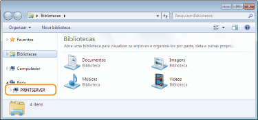
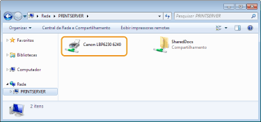
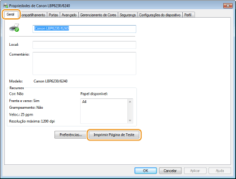
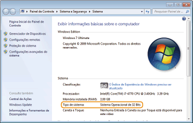
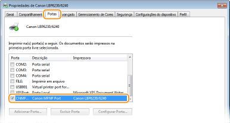
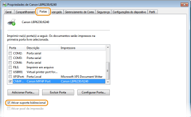
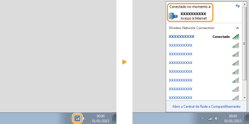

[Iniciar]

0KU8-053
Windows XP/Server 2003
[Iniciar] selecione [Meu Computador].
selecione [Meu Computador].
[Iniciar]
Windows Vista/7/Server 2008
[Iniciar] selecione [Computador].
[Iniciar]
Windows 8/Server 2012
Clique com o botão direito no canto inferior esquerdo da tela selecione [Explorador de arquivos] [Computador] ou [Este Computador].
Clique com o botão direito no canto inferior esquerdo da tela
Windows XP Professional/Server 2003
[Iniciar] selecione [Impressoras e aparelhos de fax].
[Iniciar]
Windows XP Home Edition
[Iniciar] selecione [Painel de Controle] [Impressoras e outros itens de hardware] [Impressoras e Aparelhos de Fax].
[Iniciar]
Windows Vista
[Iniciar] selecione [Painel de Controle] [Impressora].
[Iniciar]
Windows 7/Server 2008 R2
[Iniciar] selecione [Dispositivos e Impressoras].
[Iniciar]
Windows 8/Server 2012
Clique com o botão direito no canto inferior esquerdo da tela selecione [Painel de Controle] [Exibir impressoras e dispositivos].
Clique com o botão direito no canto inferior esquerdo da tela
Windows Server 2008
[Iniciar] selecione [Painel de Controle] clique duas vezes em [Impressoras].
[Iniciar]
Se você está usando o Windows Vista/7/8/Server 2008/Server 2012, ative a [Descoberta de rede] para ver os computadores em sua rede.
Windows Vista
[Iniciar] selecione [Painel de Controle] [Exibir status de rede e tarefas] em [Descoberta de rede], selecione [Ativar descoberta de rede].
[Iniciar]
Windows 7/Server 2008 R2
[Iniciar] selecione [Painel de Controle] [Exibir status de rede e tarefas] [Alterar as configurações de compartilhamento avançadas] em [Descoberta de rede], selecione [Ativar a descoberta de rede].
[Iniciar]
Windows 8/Server 2012
Clique com o botão direito do mouse no canto inferior esquerdo da tela selecione [Painel de Controle] [Exibir status de rede e tarefas] [Alterar as configurações de compartilhamento avançadas] em [Descoberta de rede], selecione [Ativar a descoberta de rede].
Clique com o botão direito do mouse no canto inferior esquerdo da tela
Windows Server 2008
[Iniciar] selecione [Painel de Controle] clique duas vezes em [Centro de Rede e Compartilhamento] em [Descoberta de rede], selecione [Ativar a descoberta de rede].
[Iniciar]
1
Abra o [Windows Explorer] ou o [Explorador de arquivos].
Windows XP/Vista/7/Server 2003/Server 2008
[Iniciar] [Todos os programas] ou [Programas] [Acessórios] [Windows Explorer].
[Iniciar]
Windows 8/Server 2012
Clique com o botão direito no canto inferior esquerdo da tela e selecione [Explorador de arquivos].
Clique com o botão direito no canto inferior esquerdo da tela e selecione
2
Selecione um servidor de impressão em [Rede] ou [Meus locais de rede].
Para verificar um computador na rede, você precisa ativar a [Descoberta de rede] (Ativando a [Descoberta de rede]) ou pesquisar pelo computador na rede.

 |
As impressoras compartilhadas são exibidas.
 |
Se o seu computador não exibir a tela [CD-ROM/DVD-ROM Setup] depois de inserir o CD-ROM/DVD-ROM, siga o procedimento abaixo. O exemplo a seguir usa "D:" como o nome da unidade de CD-ROM/DVD-ROM. O nome da unidade de CD-ROM/DVD-ROM pode ser diferente em seu computador.
Windows XP/Server 2003
[Iniciar] selecione [Executar] digite "D:\MInst.exe" clique em [OK].
[Iniciar]
Windows Vista/7/Server 2008
[Iniciar] digite "D:\MInst.exe" em [Pesquisar programas e arquivos] ou [Iniciar pesquisa] pressione a tecla [ENTER] no teclado.
[Iniciar]
Windows 8/Server 2012
Clique com o botão direito do mouse no canto inferior esquerdo da tela selecione [Executar] digite "D:\MInst.exe" clique em [OK].
Clique com o botão direito do mouse no canto inferior esquerdo da tela
Você pode verificar se o driver de impressora está operacional imprimindo uma página de teste no Windows.
1
Carregue papel tamanho A4 na bandeja multifuncional ou na abertura de alimentação manual.
Carregando papel na bandeja multifuncional
Carregando Papel na Abertura de Alimentação Manual
Carregando papel na bandeja multifuncional
Carregando Papel na Abertura de Alimentação Manual
2
Exiba a pasta da impressora. Exibindo a pasta Impressora
3
Clique com o botão direito no ícone da impressora e clique em [Propriedades da impressora] ou [Propriedades].

4
Na guia [Geral], clique [Imprimir Página de Teste].

|
|
O Windows imprime a página de teste.
|
Se não souber se o computador está executando Windows de 32 ou 64 bits, siga o procedimento abaixo para verificar.
1
Abra [Painel de Controle].
Windows Vista/7/Server 2008
[Iniciar] selecione [Painel de Controle].
[Iniciar]
Windows 8/Server 2012
Clique com o botão direito no canto inferior esquerdo da tela selecione [Painel de Controle].
Clique com o botão direito no canto inferior esquerdo da tela
2
Abra [Sistema].
Windows Vista/7/8/Server 2008 R2/Server 2012
Clique em [Sistema e Segurança] ou [Sistema e Manutenção] [Sistema].
Clique em [Sistema e Segurança] ou [Sistema e Manutenção]
Windows Server 2008
Clique duas vezes em [Sistema].
Clique duas vezes em [Sistema].
3
Verifique a arquitetura de bits.
Sistemas operacionais de 32 bits
[Sistema Operacional de 32 Bits] é exibido.
[Sistema Operacional de 32 Bits] é exibido.
Sistemas operacionais de 64 bits
[Sistema Operacional de 64 Bits] é exibido.
[Sistema Operacional de 64 Bits] é exibido.

1
Exiba a pasta da impressora. Exibindo a pasta Impressora
2
Clique com o botão direito no ícone da máquina e clique em [Propriedades da impressora] ou [Propriedades].
3
Na guia [Portas], verifique se a porta está selecionada corretamente.

 |
|
Se estiver usando uma conexão de rede e alterou o endereço IP da impressora
Se a [Descrição] da porta selecionada for [Canon MFNP Port], e a impressora e o computador estiverem na mesma sub-rede, a conexão será mantida. Você não precisa adicionar uma nova porta. Se for [Standard TCP/IP Port], você precisa adicionar uma nova porta. Configurando as portas da impressora
|
1
Exiba a pasta da impressora. Exibindo a pasta Impressora
2
Clique com o botão direito no ícone da máquina e clique em [Propriedades da impressora] ou [Propriedades].
3
Na guia [Portas], verifique se a caixa de seleção [Ativar suporte bidirecional] está marcada.

Se o seu computador está conectando a uma rede LAN sem fio, clique ,  ou
ou  na bandeja do sistema para exibir o SSID do roteador conectado da LAN sem fio.
na bandeja do sistema para exibir o SSID do roteador conectado da LAN sem fio.
ou na bandeja do sistema para exibir o SSID do roteador conectado da LAN sem fio. 